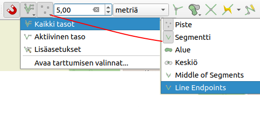

8 7. Tietojen hallinta ja editointi
Luvussa esitellään luotujen tietokohteiden käsittelyä ja työkaluja, joiden avulla käyttäjät voivat tehokkaasti hallita ja päivittää kohteiden attribuuttitietoja.
8.1 7.1. Editointi
Tietoa voidaan muokata QGISin editointityökaluilla.
- Valitse taso, jonka kohteita haluat muokata.
- Klikkaa tason editointitila päälle.
- Ota käyttöön valintatyökalu
- Valitse kohde/kohteet, jota haluat muokata
- Avaa lomake.
- Muokkaa kohteen tietoja.
- Paina OK.
- Tallenna muutokset.

8.2 7.2. Kohteen tiedot- työkalu
Voit tarkastella ja muokata kohteiden tietoja Näytä kohteen tiedot- työkalulla.
- Valitse työkalu.
- Valitse kohde.
- Tarkastele tietoja.
- Jos tason editointitila on päällä, voit avata lomakkeen ja muokata tietoja.
8.3 7.3. Tarttumisen asetukset
- Valitse QGISistä Näytä -> Työkalut -> Tarttumisen asetukset
- QGIS- ikkunaan tulee näkyviin tarttumisen työkalupalkki.
- Määritä asetukset esimerkiksi kuvan mukaisesti

- Nyt digitoidessa hiiri tarttuu olemassa oleviin kohteiden taitepisteisiin sekä segmentteihin. Tämä helpottaa etenkin vierekkäisten kohteiden digitointia